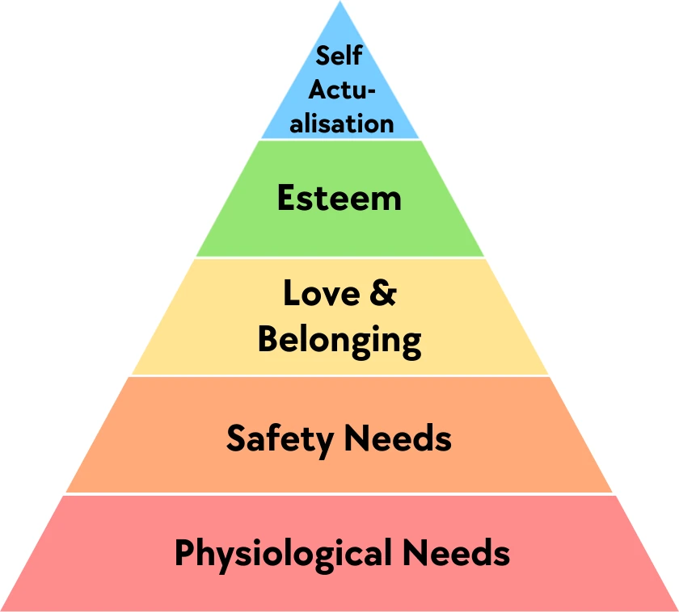

11. What We Strive For
11.3 Social Recognition and Charity
We have now looked at two value systems, together with the historical circumstances from which they emerged. On the one hand, the goal of achieving the global community of communism. On the other, the constant striving for more personal wealth, with the promise that this is equivalent to greater happiness. Today, the first goal seems both unrealistic and just strange to us. The second may make us roll our eyes, but it is something every Western reader experiences in everyday life.
Neither community for its own sake, nor the egoism implied by the pursuit of wealth, seems to me to be a viable foundation for a value system. History has shown their shortcomings clearly enough.
To figure out what could serve as the foundation of a value system, I want to start with the goals people instinctively try to fulfill: their needs. One well-known model for this is Maslow’s hierarchy of needs:

With little reflection, we can once again see where the problems lie with “communism” and “wealth” as bases for a value system. Choosing as your standard how well a certain kind of community is realized ignores the top of the pyramid: “Esteem” and “Self Actualisation”. Human beings are supposed to function only as part of the community.
Material wealth, by contrast, can help fulfill every level of the pyramid. But the higher you get in the pyramid, the more inadequate money alone becomes to fulfill those needs. At the level of “Love & Belonging”, you are going to realize that you can’t buy good friends with money.
As a first idea for a different basis for a value system, I would like to look at the value of “social recognition”.
If we assume a society is wealthy enough that no one has to suffer from hunger or homelessness, and that a good system exists to provide support in emergencies (so the levels “Physiological Needs” and “Safety Needs” are easy to fulfill), then people essentially use wealth to attain social recognition—the pyramid level of “Love & Belonging” (social recognition). It does not make sense to spend more money than is appropriate on “Esteem” and “Self Actualisation”. But to be admired by neighbors, coworkers, or friends, many people buy a large estate, a new car every year, a yacht, or other luxury goods. This level of need can therefore consume any amount of resources. That prevents surplus resources from flowing to poorer people, and it means unnecessary resource consumption.
If we could make something other than wealth lead to social recognition, then this would greatly reduce the value of money above the amount that is actually useful for each individual. Which would make society as a whole more just: rich people would give up more money, money would be distributed more evenly, and a given amount of money would generate far more satisfaction and fulfillment of needs among people.
It is not set in stone what leads to social recognition in a society. This has changed again and again over the course of history. Clear examples are ideals of beauty and fashion. Both have shifted repeatedly in the centuries since the Middle Ages. At times, people with a wasp waist were considered beautiful, at others curvy women. At times very pale skin, at others tanned skin; at times delicate limbs, at others muscles. Hair was covered, or worn long and loose, or wigs were used to create the illusion of abundant curls. Cuts of dresses, the shift from robes to trousers.100
Alongside changing ideals of beauty—as well as wealth and political and religious authority—education and research also established themselves as independent sources of social recognition beginning with the Enlightenment. Researchers, scholars, and teachers as well held a high social standing from then on; they were figures of respect.
If it is possible to add further sources of social recognition, such as education and research, then it should also be possible, if not to remove wealth as a source, then at least to significantly weaken it (just as in wealthy countries today, being overweight no longer brings social recognition, because people have enough to eat).
Social recognition is a fixed part of the level “Love & Belonging” and deeply rooted in human nature (we are social creatures). Making this driving force of human behavior more useful to society by weakening wealth as a factor can bring great benefits to the common good. But as a fundamental value system, it is unsuitable for the same reason as communism: it ignores the higher levels of esteem and self-actualization. It defines human success only by how others see a person.
Beyond that, “social recognition” makes very little sense as a goal for society as a whole. Do I really want to try to optimize a society so that as many people as possible have a high social standing in relation to everyone else? That is absurd! Social recognition is a very useful means of holding a society together and getting everyone to pull in the same direction. But as a goal, as the thing a society wants to achieve, it is no good.
Next, let us look at the value of “charity”, which Jesus preached and which Christianity sees as the foundation of its value system: “Love your neighbor as yourself.”
So for this discussion, the point is not whether kind people give something to the poor or donate to charitable organizations. If you live by “charity” as your core value, then the needs of others matter to you just as much as your own.
As a society, we have great respect for individuals who set aside their own needs in order to devote all their strength to helping the poor and the sick, or for example to running an orphanage. And if everyone devoted themselves wholeheartedly to helping others, we would have paradise on earth. Jesus called a society shaped by the value of charity the “Kingdom of God”. So if following the value of charity would lead to a better society, and the idea has already existed for thousands of years, why have only individuals done so, but no larger community and no state? Was it simply never tried seriously enough?
Quite honestly: maybe! New states do not come into being all that often. And they are almost never founded in order to enforce a value system. As for the Christian church, all we can say is that its attempt was not good enough (or that it did not actually have that as its goal). Otherwise, it would be the historical proof that it cannot work.
What, then, would be the result of following “charity” as the fundamental goal? I do not know. The first question I ask myself is whether I should interpret it literally:
If it really is about the emotions I feel, that would mean I am supposed to change my own feelings from what they would normally be. Which strikes me as extremely questionable. And once I have done that, then what? Do I not still need something I am working towards? Something I am trying to achieve for myself and for the neighbors I love?
If, on the other hand, I understand it figuratively, then I hear: “Help your neighbor as you help yourself.” But this just makes me immediately ask the same question: help towards what? Do I not still need a fundamental goal to work towards, for myself and for the neighbors I am helping?
So in both forms, “charity” does not seem to me to be a fundamental goal. It seems to me to be a call to pursue the fundamental goal, whatever that may be, not only for myself but also for other people.
If, instead, one insists on seeing “charity” as the fundamental goal, one would have to take the idea further and define charity as a goal in its own right, just as with communism. The goal would then be to create a world in which everyone loves their neighbor as themselves, the Kingdom of God on Earth.
That gives the fundamental goal of “charity” the same problem as communism and social recognition. It ignores the needs “Esteem” and “Self Actualisation”. It looks at human beings only in their relationship to others. Most people could therefore only ever internalize it as one goal among several, instead of it being their one overarching goal. It would require a different kind of human being for charity to function as a value system for everyone.
On the other hand, just because communism, social recognition, and charity do not work as the basis of a value system does not mean that a community could not do a great deal to promote the respective value and thus create a better world! It should simply be left to each individual to decide whether they want to be part of such a community or not, in order to prevent failed attempts from leading to excesses such as dictatorships (communism) and witch burnings (charity).
And that is exactly the experimental space provided by the communities of the kinotarchy (state concept in Chapter 10)! Just as they make it possible to experiment with how decisions are made and which tasks the state (or rather the community) takes on, communities also make it possible to try out how different values can be promoted and lived. At all times, it remains the decision of each individual whether they want to continue taking part or leave the community. The centralized education system serves as a counterbalance to the indoctrination of children by their community, by showing them alternative ways of life.